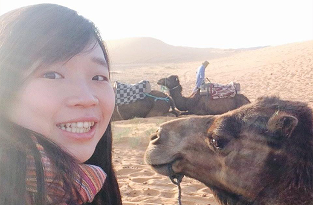

有意識地做事，才能讓世界變得更好
陳映妤 自由記者/經濟系畢
採訪/馮嘉慧
陳映妤於2016年清大經濟系畢業，目前是一位國際記者與獨立撰稿人，雖然之前就有繼續升學的計劃，但她希望有工作經驗再進修，所以在柬埔寨工作了一年，去年9月才開始在英國念碩士，修讀關於國際發展關係的課程。她希望可以繼續做國際線的記者，耕耘更多國籍遷徙以及強迫遷移相關的議題。 她就讀清大念經濟系的原因跟許多人一樣，是因為剛好指考考上了。她在學生時期就對媒體新聞方面蠻感興趣的，但當時對做國際記者並沒有太大的想象，契機發生在大四那年，她到西班牙交換了一年，開始讓她有很多機會接觸與關心到那段時間的社會議題，也有機會寫一些相關的報導。除此之外，她大學期間曾到一家公司實習過，主要幫忙做一些採訪和文案撰寫方面的工作，加上在清大裡有很多與資訊傳媒相關的資源，也有很多老師有在業界工作過，映妤也曾到交大去上傳播媒體相關的課程，這些都是非常實務的經驗。因此，雖然她的科系跟新聞媒體沒有直接相關，但其實她在大學時期做的每件事都與現在所從事的息息相關。 她在大四時有與朋友合作「故事旅社」專案，採訪全國不同大學不同科系的一百位畢業生，希望透過這個機會，把採訪鏡頭拉到身邊的人，讓專訪不僅只屬於所謂成功人士。這個計劃受到很多人的關注，她覺得是因為大家能夠在這些離自己很近的人的故事裡找到更多的共鳴，她也很高興這個計劃給大家帶來了一些小影響，被採訪過的人也曾經告訴她，當他重看一遍當時的專訪時，對於能夠被記載下來是十分感謝的。雖然現在這個計劃沒有被延續下去了，但對映妤而言卻是一個珍貴的記錄。 她看見許多大學生身上有很多想法和動力，以及對未來的展望。她認為在大學時期應該要努力去多方面嘗試，無論是再微小的機會或計劃，對未來都是一個非常好的練習和鋪墊。以她自己為例，大學時的採訪經驗，培養了她採訪人物時的一定敏感度以及快速寫稿的能力，但當下在做的時候其實並沒有想太多，可是這些東西成為了她未來非常好的基礎，讓她不會一畢業後從零開始。 她的第一篇報導於2016年出刊，內容為在地中海上的難民搜救案，去訪問當地搜救船員與工作以及搜救難民的狀況。這次的採訪認識了一個搜救難民船上的廚師，讓她覺得原本遙不可及的社會議題突然變得很靠近，像是朋友的故事一樣。她認為一篇報導很難帶來什麼價值和影響，但它會成為一個記錄，作為一個文字工作者，新聞發出來之後就會變成歷史。值得珍惜的是，在一個時代的洪流裡，有人願意去把各個角落的拼圖給拼湊起來，對她而言，重要的並不是當下有多少人看到她的報導，而是當有人回頭去看的時候，發現這件事沒有被遺忘，而是用另一種形式將他們所做的事情儲存在這個世界上。 她希望以後可以透過訓練讓有與她相同目標及熱血的年輕人，教會他們用更敏感、更全面的思考方式去審視自己的角色與定位。現在太多的人想要當志工，想要做有意義的事情，想著要改變世界，但是其中過程是需要非常多的考量，而不是只是在別的國家做一些好事，如蜻蜓點水般，僅此而已。在柬埔寨的NGO組織工作一年半，帶給她非常多的反思，當她看見很多台灣團隊待了一兩個月就想著要幫助當地人，或者想要改變什麼，儘管有好的初衷，可是在短期內是做不到的。 她非常鼓勵希望有更多的年輕人可以投身這個領域，因為這個領域的確需要多人的投入才有機會真正使這個世界變得更好，但是如果沒有足夠的小心與意識知道自己在做什麼的話，這反而會是一件非常危險的事情。她希望可以把這些人的熱情與動力轉化成更實質、更有意義的行動，這是她對自己未來的期許。 「不要做一個只想做好事的天真的人，而是要做知道自己在幹嘛的好人。」她勉勵。想做有意義的事情是一件非常棒的事情，當初的她也對世界充滿希望，滿腔熱血，很希望能夠做可以帶來正面影響的事情。但很重要的是，必須得知道自己的行為以及所做的事情會帶來的影響，無論影響是好與壞，學會有意識性的看待這件事情，都是非常重要的功課。
Abstract
陳映妤在學時期與朋友合作「故事旅社」，看見許多大學生上的想法與動力。畢業後，在柬埔寨工作一年，之後在英國進修碩士。她希望可以繼續做國際線記者，耕耘更多國籍遷徙與強迫遷移等議題。這個領域需要更多人的投入，但必須仔細意識自己在做什麼，才能將熱情與動力化成更實質、更有意義的行動。
Ante sed commodo

Mollis adipiscing nisl
Eget mi ac magna cep lobortis faucibus accumsan enim lacinia adipiscing metus urna adipiscing cep commodo id. Ac quis arcu amet. Arcu nascetur lorem adipiscing non faucibus odio nullam arcu lobortis. Aliquet ante feugiat. Turpis aliquet ac posuere volutpat lorem arcu aliquam lorem.

Neque ornare adipiscing
Eget mi ac magna cep lobortis faucibus accumsan enim lacinia adipiscing metus urna adipiscing cep commodo id. Ac quis arcu amet. Arcu nascetur lorem adipiscing non faucibus odio nullam arcu lobortis. Aliquet ante feugiat. Turpis aliquet ac posuere volutpat lorem arcu aliquam lorem.